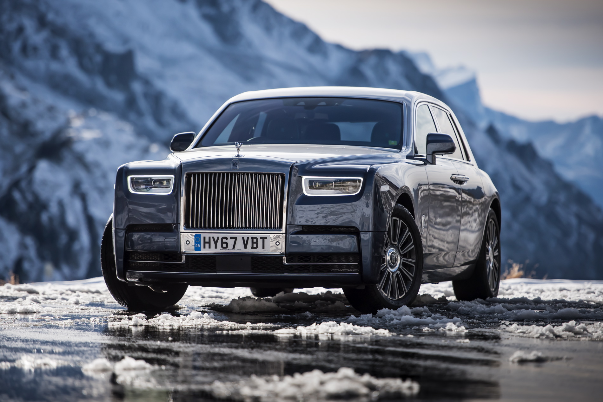
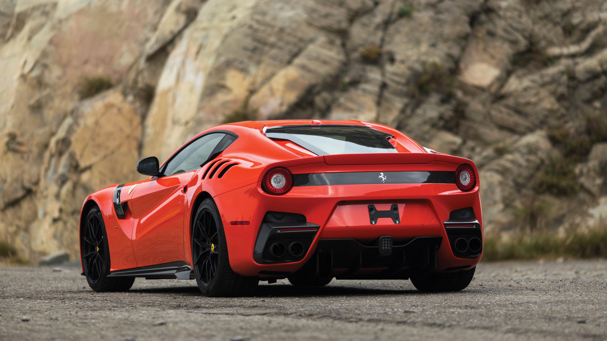
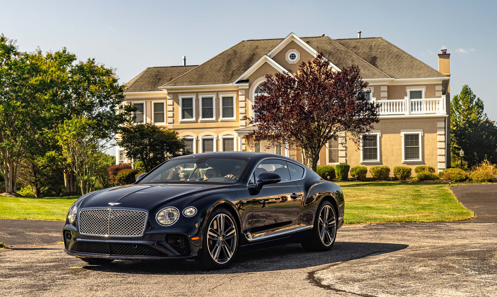
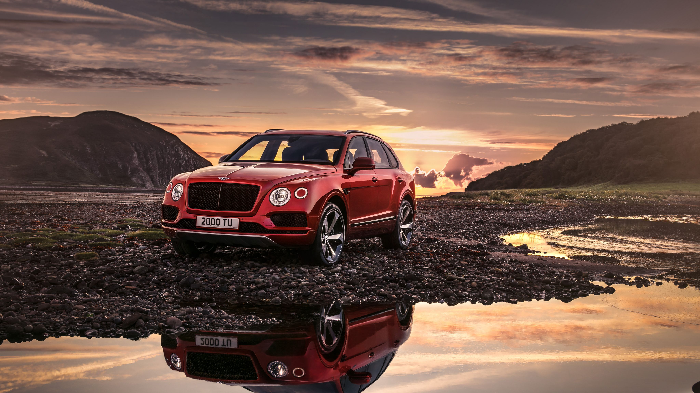
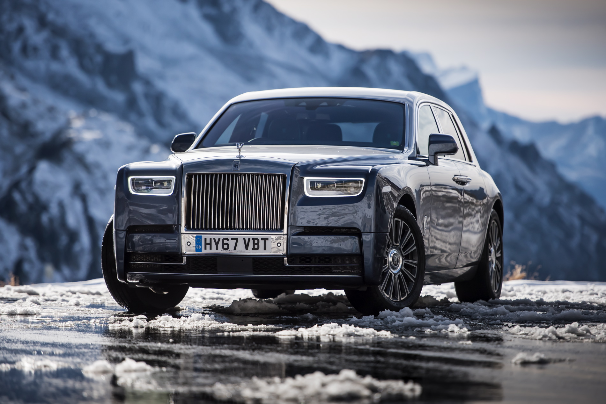
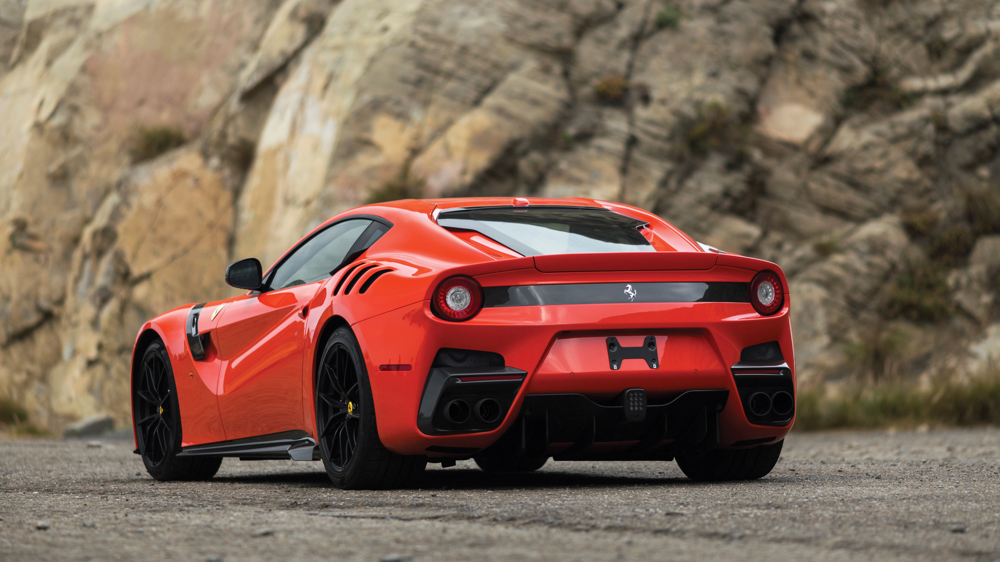
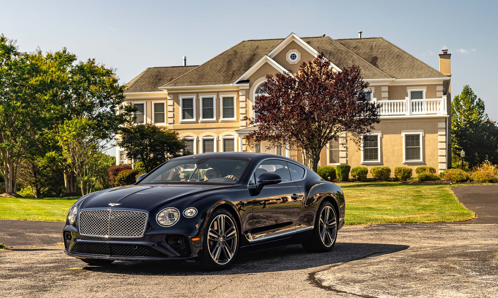
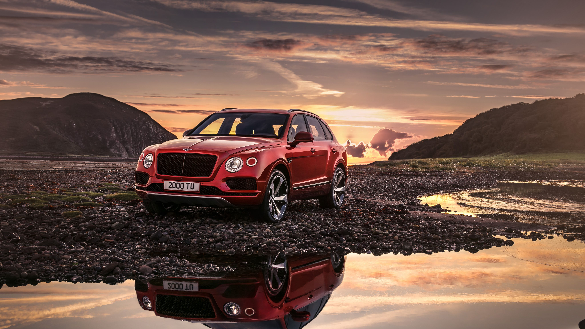

A car, or an automobile, is a motor vehicle with wheels. Most definitions of cars state that they run primarily on roads, seat one to eight people, have four wheels, and mainly transport people, not cargo.
French inventor Nicolas-Joseph Cugnot built the first steam-powered road vehicle in 1769, while French-born Swiss inventor François Isaac de Rivaz designed and constructed the first internal combustion-powered automobile in 1808.
The modern car—a practical, marketable automobile for everyday use—was invented in 1886, when German inventor Carl Benz patented his Benz Patent-Motorwagen.
Commercial cars became widely available during the 20th century. One of the first cars affordable by the masses was the 1908 Model T, an American car manufactured by the Ford Motor Company.
Cars were rapidly adopted in the US, where they replaced horse-drawn carriages.[3] In Europe and other parts of the world, demand for automobiles did not increase until after World War II.
The car is considered an essential part of the developed economy.
Cars have controls for driving, parking, passenger comfort, and a variety of lamps. Over the decades, additional features and controls have been added to vehicles, making them progressively more complex.
These include rear-reversing cameras, air conditioning, navigation systems, and in-car entertainment. Most cars in use in the early 2020s are propelled by an internal combustion engine, fueled by the combustion of fossil fuels. Electric cars, which were invented early in the history of the car, became commercially available in the 2000s and are predicted to cost less to buy than petrol-driven cars before 2025.
The transition from fossil fuel-powered cars to electric cars features prominently in most climate change mitigation scenarios,[7] such as Project Drawdown's 100 actionable solutions for climate change.